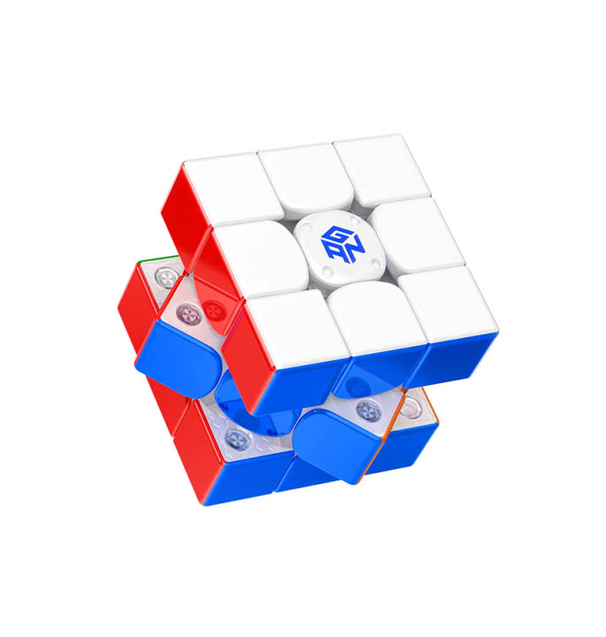
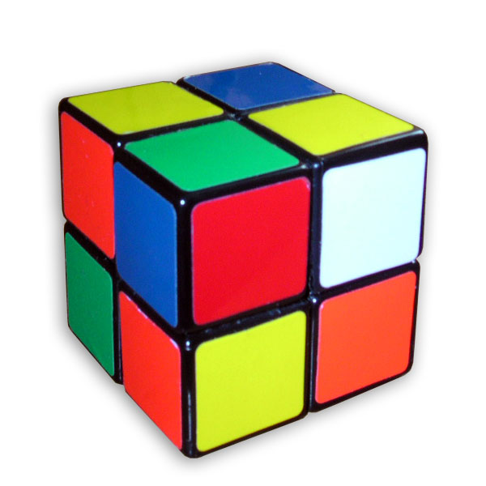
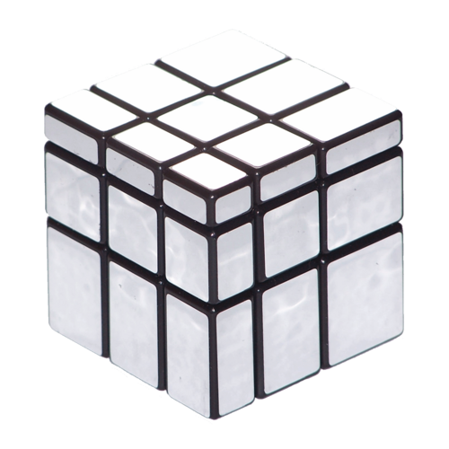
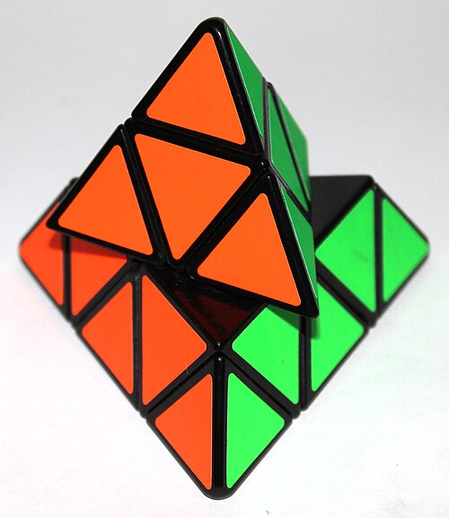
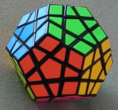
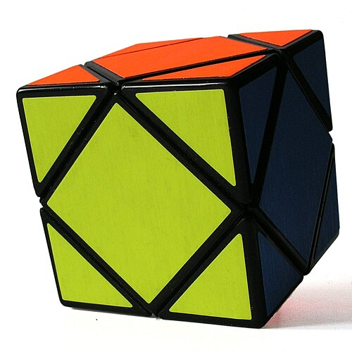

Zeka Küpleri Dünyasına Hoş Geldiniz!
Bu site, zeka küplerini çözmeyi öğrenmek isteyen herkes için hazırlanmıştır. İster yeni başlayan olun ister deneyimli bir çözücü, burada faydalı bilgiler, adım adım çözüm rehberleri ve pratik ipuçları bulacaksınız.
Rubik Küpü 1974 yılında Macar mimar Ernő Rubik tarafından icat edilmiştir. O günden bu yana milyonlarca insanın tutkusu haline gelen bu bulmaca, günümüzde onlarca farklı varyasyonuyla karşımıza çıkmaktadır.
Sitemizde 2x2, 3x3, 4x4, Pyraminx, Megaminx, Kilominx, Mirror Cube, Skewb ve daha birçok küpün detaylı çözüm rehberlerini bulabilirsiniz.

Görsel Kaynak: Gancube
🧠 Zeka Küpleri Neden Faydalıdır?
🎯 Problem Çözme
Karmaşık problemleri küçük adımlara bölmeyi öğretir. Algoritmik düşünme becerinizi geliştirir.
🧠 Hafıza Güçlendirme
Algoritmaları ezberlemek ve uygulamak, kısa ve uzun süreli hafızanızı güçlendirir.
✋ El-Göz Koordinasyonu
Hızlı parmak hareketleri ve görsel takip, motor becerilerinizi geliştirir.
😌 Stres Azaltma
Küp çözmek meditasyon etkisi yaratır, odaklanmayı artırır ve stresi azaltır.
🏆 Özgüven Artışı
Bir küpü ilk kez çözdüğünüzde hissedeceğiniz başarı duygusu, özgüveninizi yükseltir.
👥 Sosyal Bağlantılar
Speedcubing topluluğu dünya genelinde milyonlarca kişiden oluşur.
🎲 Popüler Zeka Küpü Türleri
Aşağıda en popüler zeka küpü türlerini bulabilirsiniz:
3x3 Rubik Küpü
En klasik zeka küpü. 43 kentilyon farklı kombinasyona sahiptir.

2x2 Pocket Küp
Başlangıç seviyesi için ideal küçük versiyon.

Mirror Cube
Renk yerine şekil farkıyla çözülen benzersiz küp.

Pyraminx
Piramit şeklinde, sezgisel çözümü olan eğlenceli bulmaca.

Megaminx
12 yüzlü, 3x3 bilgisiyle çözülebilen dev bulmaca.

Skewb
Köşelerden dönen, hızlı ve eğlenceli bir küp.
Detaylı bilgi için Küp Türleri sayfasını ziyaret edin.
📊 Küp Türleri Karşılaştırma Tablosu
| Küp Türü | Yüz | Parça | Zorluk | Ort. Süre (Başlangıç) | Dünya Rekoru |
|---|---|---|---|---|---|
| 2x2 Pocket Küp | 6 | 8 | ⭐ Kolay | 2-5 dk | 0.49 sn |
| 3x3 Rubik Küpü | 6 | 26 | ⭐⭐ Orta | 3-10 dk | 3.13 sn |
| 4x4 Rubik Küpü | 6 | 56 | ⭐⭐⭐ Zor | 10-30 dk | 16.79 sn |
| Mirror Cube | 6 | 26 | ⭐⭐ Orta | 5-15 dk | 15.52 sn |
| Pyraminx | 4 | 14 | ⭐ Kolay | 1-3 dk | 0.91 sn |
| Megaminx | 12 | 62 | ⭐⭐⭐ Zor | 30-90 dk | 27.22 sn |
| Kilominx | 12 | 32 | ⭐⭐ Orta | 5-15 dk | 13.80 sn |
| Skewb | 6 | 14 | ⭐ Kolay | 1-3 dk | 0.93 sn |
| Square-1 | 6 | 21 | ⭐⭐⭐⭐ Çok Zor | 15-45 dk | 4.26 sn |
Kaynak: WCA (World Cube Association) verileri
🎵 Çözerken Dinle — Odaklanma Müziği
Küp çözerken arka planda çalacak rahatlatıcı müzik:
Ses Kaynağı: SoundHelix (Ücretsiz)
📖 Rubik Küpü — Vikipedi
Rubik Küpü hakkında detaylı bilgiyi aşağıdan okuyabilirsiniz:
Kaynak: Türkçe Vikipedi
💡 Günün İpucu
Her tıklamada farklı bir çözüm ipucu:
Butona tıklayarak günün ipucunu görebilirsiniz!
⏰ Canlı Saat ve Tarih
Çözüm sürenizi takip etmek için:
⏱️ Çözüm Kronometresi
Küpünüzü ne kadar sürede çözdüğünüzü ölçün:
❓ Sıkça Sorulan Sorular
Hayır! 3x3 küpü çözmek göründüğünden çok daha kolaydır. Temel yöntemi öğrenmek birkaç saat sürer.
3x3 Rubik Küpü ile başlamanızı öneririz. Öğrendiğiniz teknikler diğer tüm küplerin temelini oluşturur.
Hayır! Aynı algoritmalar kullanılır. Tek fark: renk yerine parça boyutuna bakarsınız.
Zeka küplerini en kısa sürede çözmeye dayanan rekabetçi aktivitedir. WCA tarafından düzenlenir.
Evet! Silikon bazlı küp yağı küpünüzün pürüzsüz dönmesini sağlar ve ömrünü uzatır.